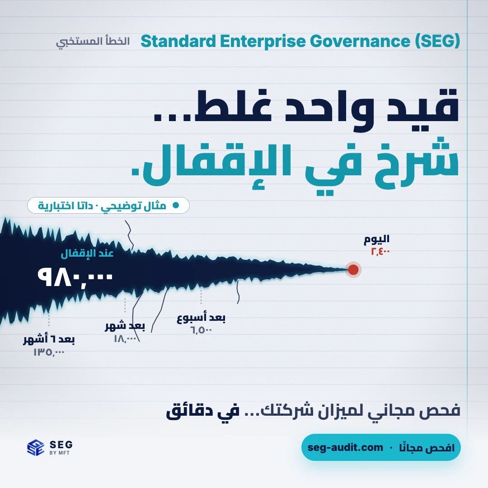
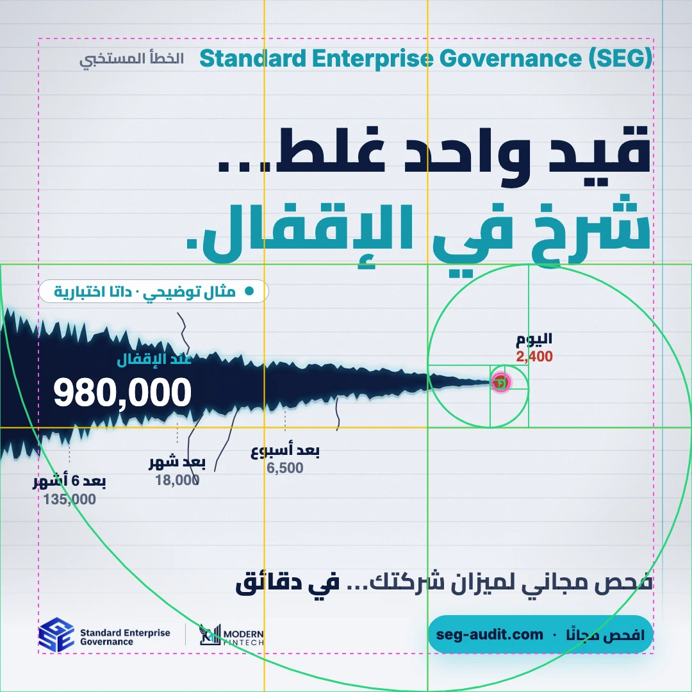
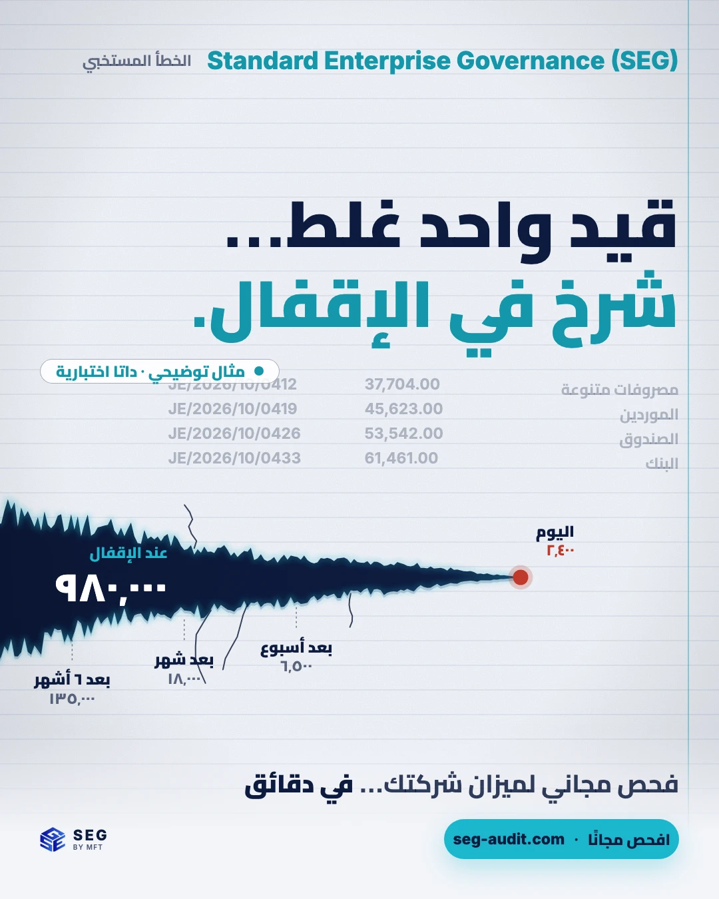
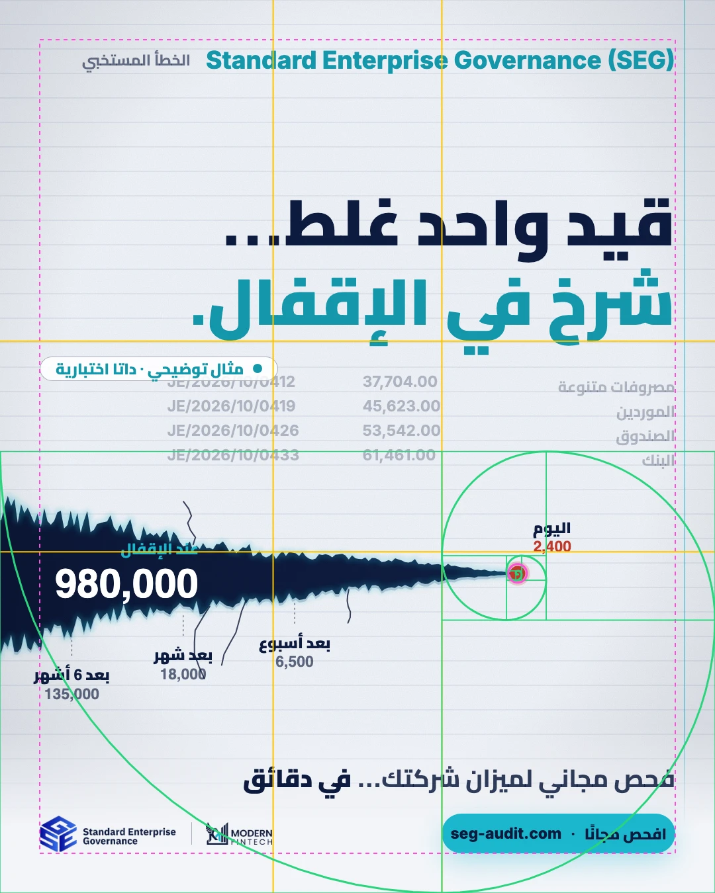
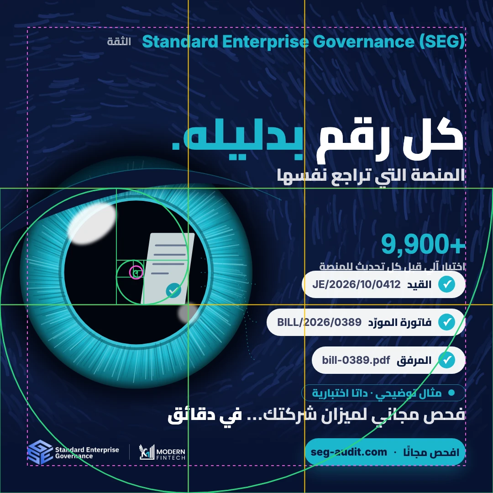
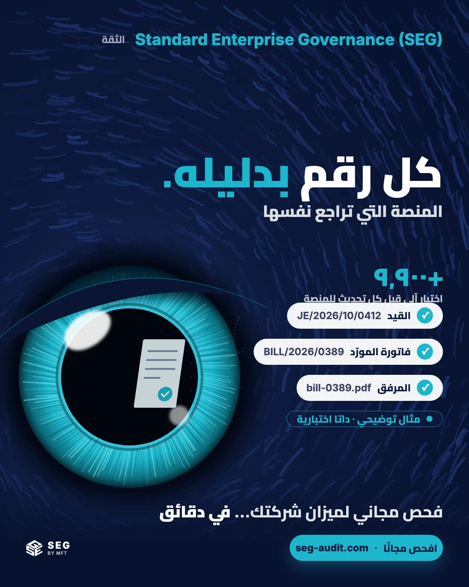
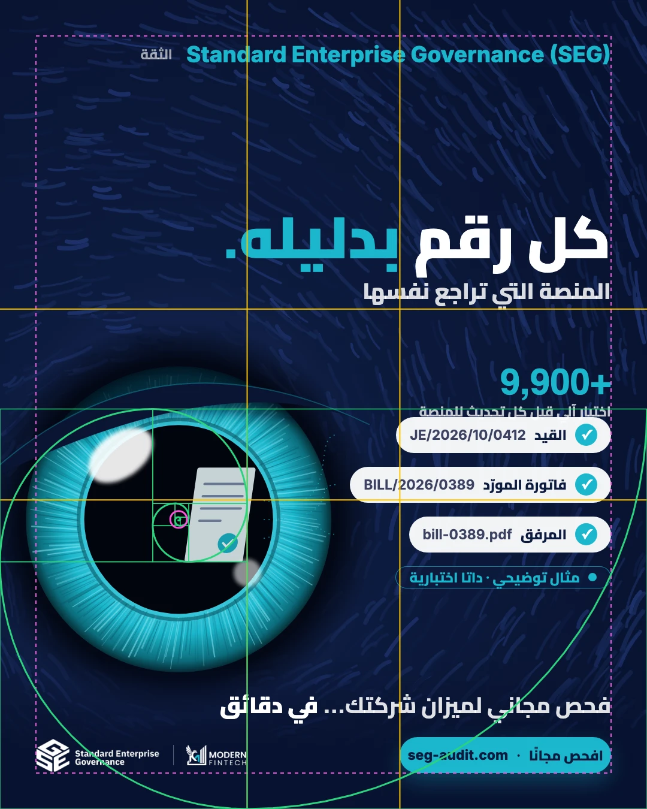

4 مفاهيم × مقاسي Meta feed (1:1 و4:5)، نفس الطقم لمجموعتَي مصر والسعودية. مولَّدة بالكود عبر scripts/golden-ads.js. بجانب كل إعلان نسخة guides: خطوط القسمة بالأصفر، والحلزون بالأخضر، والعين والهامش بالبنفسجي. القياسات في metrics.json.
الفكرة: صفحة دفتر يومية بتتشق. قيد واحد غلط النهارده شعرة، ويوم الإقفال شرخ بيقسم الصفحة.
φ: عرض الشرخ w(x) = T0·φ^((x0−x)/Δ): بيتضرب في φ كل Δ px بالظبط، فبيعدّي على عروض السُّلَّم 23 ← 37 ← 60 ← 97 ← 158 ← 255. نقطة البداية الحمرا على عين الحلزون، وعلامات الزمن (أسبوع، شهر، 6 أشهر) عند العروض T2 وT3 وT4. سطور الدفتر كل T1، والأعمدة على خطوط القسمة.




الفكرة: ساعة رملية رملها أيام نوفمبر، والرقبة هي لحظة الإغلاق: الإثنين 30 نوفمبر 2026، 11:59 مساءً بتوقيت القاهرة. يوم الإغلاق مربع سماوي في الرقبة، والانتفاخ السفلي فاضي (مفيش عدّ تنازلي يتقادم). حلّت محل ساعة المقاعد المسحوبة (6 نوفمبر 2026).
φ: الساعة مستطيل ذهبي (h × h/φ). الرقبة على عين الحلزون، وبتقسم الارتفاع عند القسمة الذهبية: الانتفاخ العلوي h/φ والسفلي h/φ². مربع اليوم T1، ورقم يوم الإغلاق بأكبر درجة T6 (412 px)، وخط منتصفه على مستوى العين تقريبًا (القياس في الجدول).
الفكرة: عين صقر ماكرو هي البطل: في قرنيتها انعكاس مستند عليه ✓، ونظرتها ممتدة لسلسلة الدليل (القيد ← فاتورة المورّد ← المرفق).
φ: البؤبؤ على عين الحلزون. نصف قطر القزحية T5 (255)، والبؤبؤ T5/φ، ولمعة الضوء T5/φ³ وT5/φ⁵، والمستند المنعكس مستطيل ذهبي عرضه T5/φ². الريش متجه على مماس حلزون لوغاريتمي بخطوة الحلزون الذهبي (atan(2·ln φ/π) ≈ 0.3 rad).



الفكرة: طابور تعرّف في قسم شرطة: قيود يومية قدام لوحة الأطوال، والمتهم تحت اللمبة: بلا مرفق، والمنشئ هو المعتمِد، وآخر دقيقة في الشهر.
φ: القيد المتهم مستطيل ذهبي (h × h/φ) مركزه على الخط x = W/φ تحت مخروط الضوء، والقيد اللي جنبه 1/φ من حجمه، والأسئلة في المساحة اللي قبل خط القسمة. خطوط لوحة الأطوال كل T1. مفيش حلزون هنا: التركيب مبني على القسمة والمستطيلات.